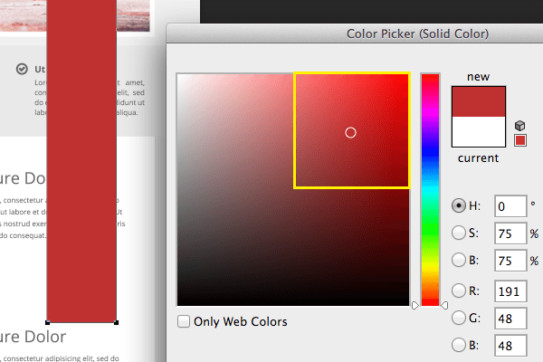

-
 这组图片中的静物等非常的日系
这组图片中的静物等非常的日系
-
 这组图片中的静物等非常的日系
这组图片中的静物等非常的日系
-
 这组图片中的静物等非常的日系
这组图片中的静物等非常的日系
模板分享 学无止境 慢生活 热门标签 特别推荐
-
作为一个设计师,如果遭到质疑你是否能恪守自己的原则 就拿我自己来说吧，有时候会很矛盾，设计好的作品，不把它分享出来，会觉得待在自己电脑里面实在是没有意义 阅读原文

-
愿有人陪你一起颠沛流离有一天晚上我收到朋友的邮件，他问我怎样可以最快地摆脱寂寞，我想了想不知道应该怎么回答他，因为我从来没有摆脱过这个问题，我只能去习惯它，就像习惯身体的一部分 阅读原文

-
你要去相信，没有到不了的明天不管你现在是一个人走在异乡的街道上始终没有找到一丝归属感，还是你在跟朋友们一起吃饭开心地笑着的时候闪过一丝落寞 阅读原文

-
美丽的茧让世界拥有它的脚步，让我保有我的茧。当溃烂已极的心灵再不想做一丝一毫的思索时，就让我静静回到我的茧内，以回忆为睡榻，以悲哀为覆被，这是我唯一的美丽 阅读原文

-
6条网页设计配色原则,让你秒变配色高手 网页设计好不好看,颜色是毋庸置疑要排首位的,所以关于颜色的搭配技巧以及原则,对于每一个要学习web前端设计的新手来说,这都是一个重要的学习过程.在本教程中我们将与你分享 阅读原文
-
愿有人陪你一起颠沛流离有一天晚上我收到朋友的邮件，他问我怎样可以最快地摆脱寂寞，我想了想不知道应该怎么回答他，因为我从来没有摆脱过这个问题，我只能去习惯它，就像习惯身体的一部分 阅读原文
最新文章
-
6条网页设计配色原则,让你秒变配色高手
网页设计好不好看,颜色是毋庸置疑要排首位的,所以关于颜色的搭配技巧以及原则,对于每一个要学习web前端设计的新手来说,这都是一个重要的学习过程.在本教程中我们将与你分享
关于我
网名: DanceSmile
职业: Web前端设计师
籍贯: 陕西省西安市
邮箱: chenorange12@gmail.com
点击排行榜
-
教你怎样用欠费手机拨打电话
对于刚毕业的学生来说，想学习建网站，掌握一技之长，最简单的入门
-
你面对的是生活而不是手机
最简单的入门无非就是学会html和css，先前发表过一篇文章
-
原来以为，一个人的勇敢是，删掉他的手机号码
先前发表过一篇文章《如果要学习web前端开发，需要学习什么?需要什么我也能快速的是对方 上的放假啊分裂势力萨拉时发生了
微信关注